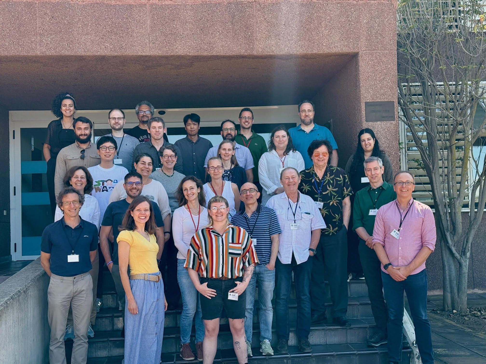

Welcome to GATOS
Meet the team
Members
About GATOS
The Galaxy Activity, Torus, and Outflow Survey (GATOS) is an international collaboration that synthesizes the skills of dozens of observation and modeling experts from around the globe, united by the common goal of characterizing the phenomenology of active galactic nuclei (AGN). Our members study a variety of phenomenon, including the torus, dynamic gas flow cycles, polar dust emissions, shocks, diagnosing AGN properties via emission line ratios, and more. We also aim to emerge as a leading voice in the implementation of artificial intelligence in astrophysics. If you are a scientist in a related field, we likely have work that is of interest to you! If you are interested in contacting us, please navigate to the contact page to submit a contact form. Our members have access to exclusive resources, data submission tools, and collaborative opportunities that enhance research capabilities and outcomes.